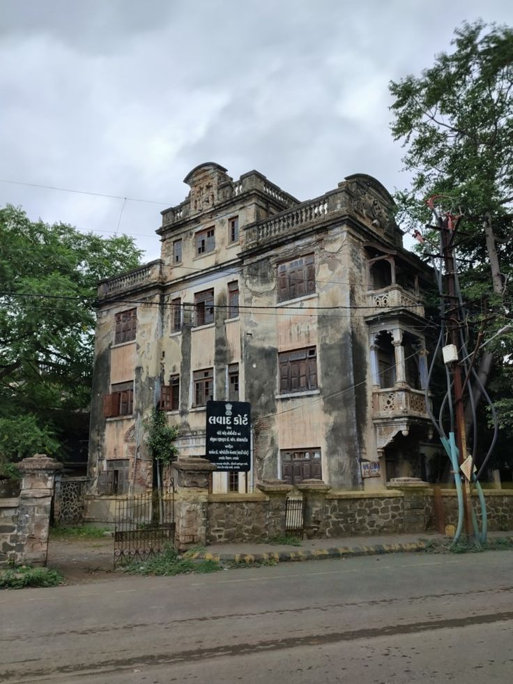

Rajkot - Nature
Lalpari Quiet Spot
A peaceful lakeside area away from the main city rush.
Explore More
Rajkot - Historical
Old Rajkot Street
A hidden heritage lane reflecting the old charm of the city.
Explore More
Junagadh - Spiritual
Temple Hill Viewpoint
A calm spiritual spot with peaceful surroundings and scenic views.
Explore More
Junagadh - Historical
Hidden Fort Corner
A lesser-noticed architectural corner near the heritage zone.
Explore More
Surat - Food & Culture
Hidden Food Street
A less-known food lane loved by locals for authentic taste.
Explore More
Surat - Nature
Quiet Riverside Walk
A relaxing hidden riverside area ideal for evening visits.
Explore More
Ahmedabad - Historical
Old Heritage Lane
A narrow old street full of local history and hidden stories.
Explore More
Ahmedabad - Food & Culture
Cultural Food Corner
A cozy lane filled with authentic flavors and local culture.
Explore More
Vadodara - Nature
Garden Retreat Corner
A calm green escape perfect for peaceful walks and quiet time.
Explore More
Vadodara - Spiritual
Hidden Temple Court
A peaceful sacred place away from the usual crowded routes.
Explore More